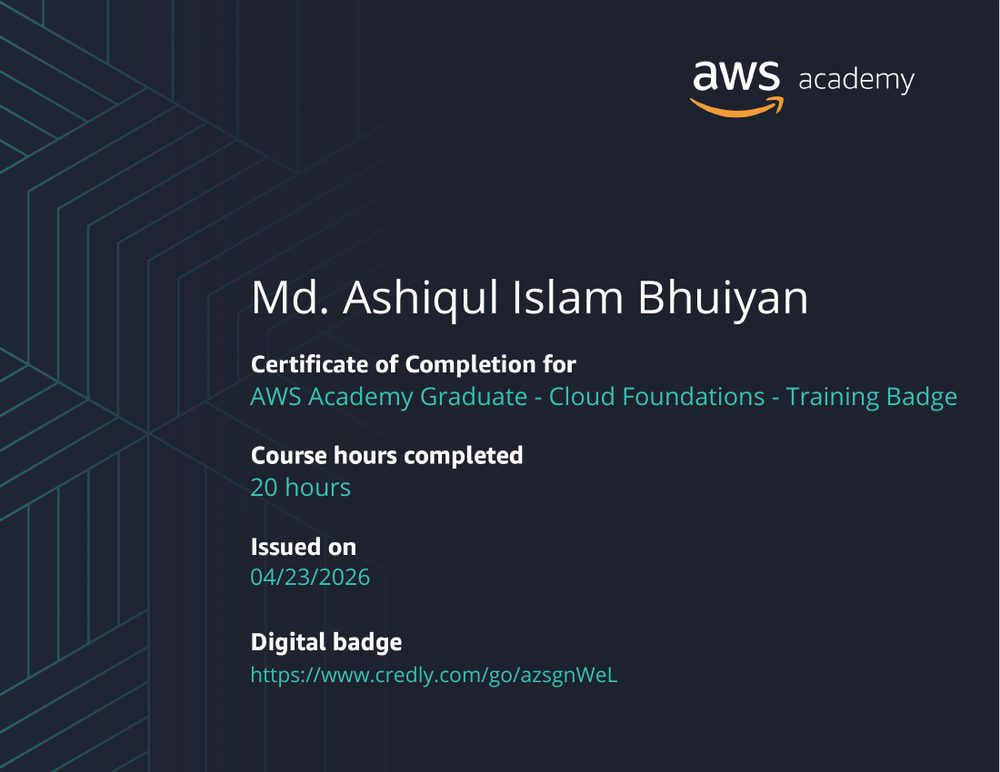
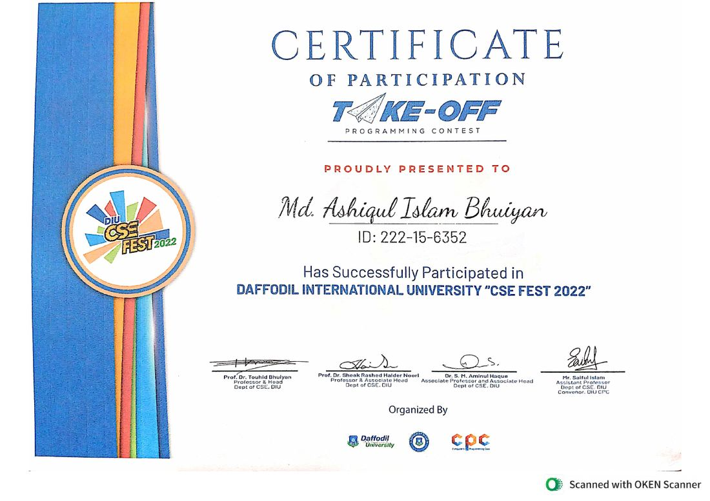

Graph ML for biomedicine
GCN and GIN models with attention pooling, link prediction and molecular features. Evaluated on drugs the model has never seen.
I build graph neural networks, Bengali language models, post-quantum signing tools, full-stack healthcare apps, blockchain verification and GPU failure detectors.
I am a Computer Science and Engineering graduate specializing in AI and ML. I train graph and language models, then ship them as working systems with APIs, dashboards and cloud infrastructure.
About
I build machine learning systems and carry them from research to deployment. My thesis, INDIGO, applies graph neural networks to drug-drug interactions.
I also build full-stack and security software, including post-quantum document signing and blockchain credential verification. I look for roles in which research turns into a working product.
Focus
Three areas of work, each taken from a first experiment to a running application.
GCN and GIN models with attention pooling, link prediction and molecular features. Evaluated on drugs the model has never seen.
BanglaBERT fine-tuning on 2,500+ labeled social media posts, with a documented hyperparameter search and per-class error analysis.
Post-quantum signing, blockchain verification and multi-role platforms in Go, TypeScript and Python, deployed with Docker.
Selected work
Four featured projects from 2025 and 2026, with four more below the button. Every figure comes from my own training runs or builds.
Drug-drug interaction prediction with graph neural networks
Setup: DrugBank v5.1, 11,107 drugs, drug-disjoint 70/15/15 split, multi-label over 87 interaction types.
BanglaBERT fine-tuning for three-class sentiment
Setup: 3-class dataset of 2,500+ posts, scored by accuracy and weighted F1.
Post-quantum digital document signing platform
Setup: ML-DSA-87 signing timed in the browser through WebAssembly.
Full-stack healthcare platform
Setup: Oracle Cloud Free Tier ARM, Docker Compose, Redis cache on high-frequency endpoints.
Predictive GPU failure detection for Kubernetes
Blockchain academic credential verification
Setup: Ethereum Sepolia testnet, Merkle batch proofs against one transaction per credential.
GitHub activity gamification platform
Setup: GitHub REST API, parallel Go routines against sequential requests.
AI botanical image classifier
Setup: Oxford Flowers102 validation set, CPU inference.
Process
The order I follow on each project.
Define the task, pick the dataset and choose a metric suited to class imbalance, such as PR-AUC.
Start with a baseline. Add complexity one version at a time and log every run.
Hold out whole drugs or unseen data. Review per-class errors before trusting a headline number.
Wrap the model in Streamlit or FastAPI, containerize with Docker and add a live dashboard.
Skills
Grouped by the job they do.
Education
2022 to 2026
Daffodil International University, Dhaka. Specialization in Artificial Intelligence and Machine Learning.
Coursework: Machine Learning, Deep Learning, Algorithms, Computer Graphics, Cryptography and Network Security, Database Systems.
Thesis: INDIGO, GNN-based drug-drug interaction prediction.
CGPA
25 July 2026
Certificate of Appreciation for mentoring team Syntax Error at "From Learning to Impact". Organized by the Department of CSE at Daffodil International University, with seed funding from World AI Alliance.
23 April 2026
Training badge with 20 course hours, issued through AWS Academy.

2022
Certificate of Participation at DIU CSE Fest 2022. Organized by the Department of CSE and the Computer and Programming Club at Daffodil International University.

Languages: Bengali (native) and English (professional).
Contact
I am open to AI, ML and software engineering roles where research becomes a deployed, working system.